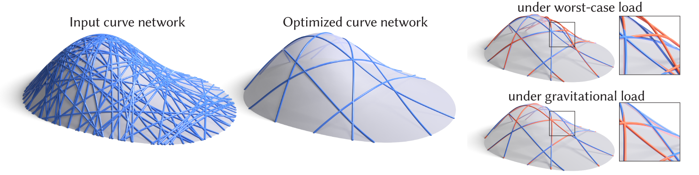

Keypoint-Driven Line Drawing Vectorization via PolyVector Flow
William Neveu¹, Ivan Puhachov¹, Bernard Thomaszewski², Mikhail Bessmeltsev¹
¹ Université de Montréal
² Boston University

Abstract
Designing curve networks for fabrication requires simultaneous consideration of structural stability, cost effectiveness, and visual appeal---complex, interrelated objectives that make manual design a difficult and tedious task.
We present a novel method for fabrication-aware simplification of curve networks, algorithmically selecting a stable subset of given 3D curves. While traditionally stability is measured as magnitude of deformation induced by a set of pre-defined loads, predicting applied forces for common day objects can be challenging. Instead, we directly optimize for minimal deformation under the worst-case load.
Our technical contribution is a novel formulation of 3D curve network simplification for worst-case stability, leading to a mixed-integer semi-definite programming problem (MI-SDP). We show that while solving MI-SDP directly is infeasible, a physical insight suggests an efficient greedy approximation algorithm. We demonstrate the potential of our approach on a variety of curve network designs and validate its effectiveness compared to simpler alternatives using numerical experiments.
@article{Puhachov2021KeypointPolyvector,
author = {Ivan Puhachov and William Neveu and Edward Chien and Mikhail Bessmeltsev},
title = {Keypoint-Driven Line Drawing Vectorization via PolyVector Flow},
journal = {ACM Transactions on Graphics (Proceedings of SIGGRAPH Asia)},
volume = {40}, number = {6}, year = {2021}, month = dec,
doi = {10.1145/3478513.3480529}
}